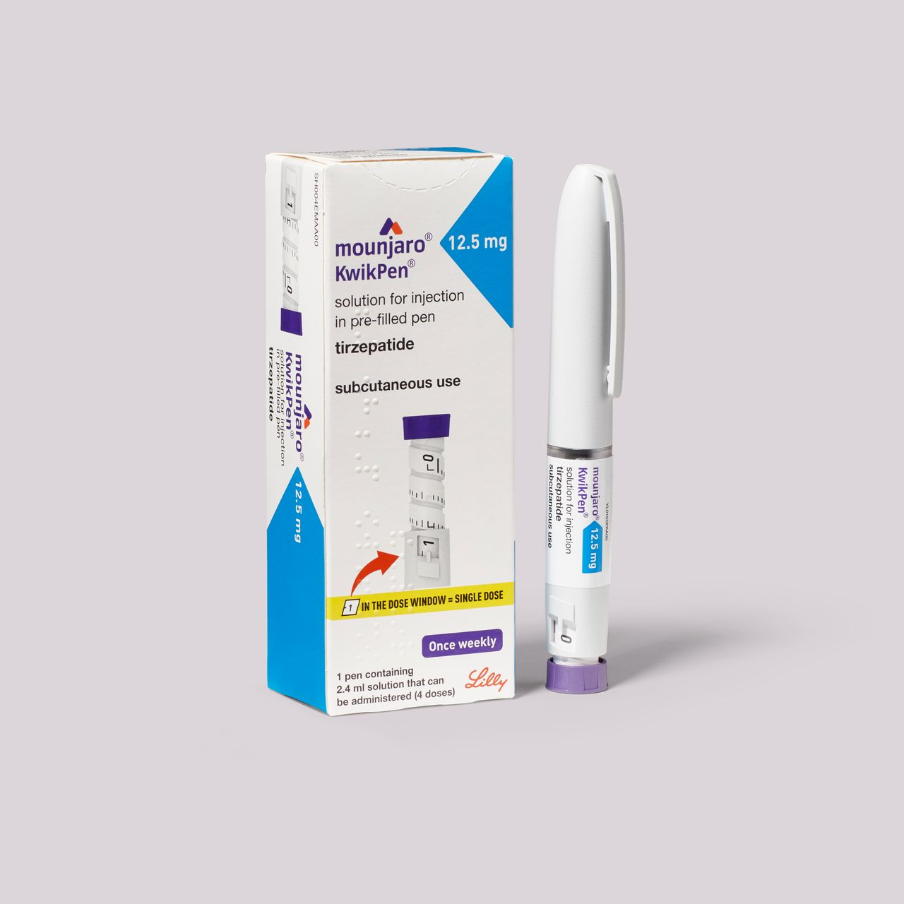
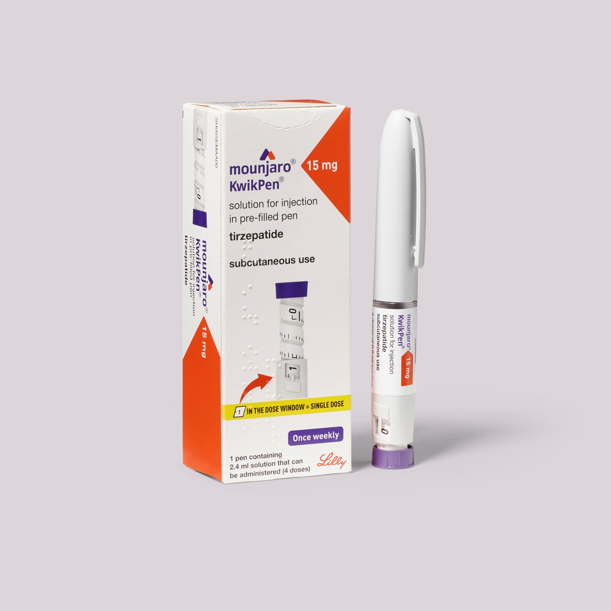

Where to Buy Mounjaro (Tirzepatide) in Nigeria: 2026 Guide
Searching for where to buy Mounjaro or tirzepatide in Nigeria usually leads to dozens of Instagram and WhatsApp sellers with very different prices and no doctor in sight. Here's how to buy safely, and why a service backed by a team of doctors, like MedVanceNg, is the safest place to start.
The short answer: buy Mounjaro from a licensed, doctor-led provider that assesses you first, explains where its stock comes from, and delivers it cold. That's exactly how MedVanceNg works.
Buy Mounjaro with a doctor's guidanceKey points
- Mounjaro is the brand name for tirzepatide, a once-weekly weight-loss injection made by Eli Lilly.
- It isn't officially distributed by Eli Lilly in Nigeria, so where you buy matters a lot.
- MedVanceNg offers consultations with our team of doctors, cold-chain delivery and support at every dose.
- Avoid sellers who skip the medical check or sell far below market price.
Mounjaro and tirzepatide: what's the difference?
Tirzepatide is the medicine. Mounjaro is Eli Lilly's brand name for it, sold in pre-filled pens from 2.5 mg to 15 mg. You may also see compounded tirzepatide, which comes in vials and is made by pharmacies rather than Eli Lilly.

MOUNJARO 12.5MG

MOUNJARO 15MG
Tirzepatide mimics two gut hormones, GIP and GLP-1. It reduces appetite, helps you feel full sooner and improves blood sugar control. In Eli Lilly's SURMOUNT-1 trial, adults on the highest dose lost about 21% of their body weight on average over 72 weeks, alongside diet and exercise.
Where to buy Mounjaro in Nigeria
Because Eli Lilly has no official distributor in Nigeria, every Mounjaro pen here is imported by individual sellers, and quality varies hugely. These are your options, from safest to riskiest.
1. MedVanceNg: our team of doctors, delivered cold
MedVanceNg starts with a consultation with one of our team of licensed doctors. If Mounjaro is right for you, we prescribe your starting dose, deliver your pens in cold-chain packaging, and follow up as your dose increases. You get medicine and medical care together, which is the safest way to start, especially if you're new to GLP-1 treatment.
2. Retail pharmacies
Some pharmacies in Lagos and Abuja stock Mounjaro. Ask where the stock came from and how it was shipped. Most won't assess you or follow up on your progress.
3. Social media vendors
Instagram and WhatsApp vendors are everywhere, but most have no doctor, no address and no proof of how their pens were stored. This is where most fake and spoiled pens are found. Counterfeit GLP-1 pens found abroad have even contained insulin, which can cause dangerously low blood sugar, and spoiled pens may simply not work.
Where to buy tirzepatide in Nigeria
Tirzepatide comes in two forms, and MedVanceNg offers both:
- Branded Mounjaro pens. Pre-measured doses, easiest to use, higher price.
- Compounded tirzepatide vials. Lower price, but you measure each dose with a syringe.
During your consultation, our doctors help you choose the option that fits your health, comfort with injections and budget.
Why Nigerians choose MedVanceNg for Mounjaro
MedVanceNg is a licensed telehealth service with a dedicated team of doctors. We exist so Nigerians can start weight-loss treatment with medical professionals beside them, not a random vendor.
- A team of licensed doctorsEvery order is reviewed by one of our doctors, so your treatment is prescribed for you.
- Cold-chain deliveryYour medicine is packed at 2–8°C in insulated packaging and delivered to your door.
- Support at every doseWe guide each dose increase and help you manage side effects on WhatsApp.
- Clear, upfront pricingYou see the full cost before you pay, with no hidden fees.
- Honest about sourcingWe tell you where your medicine comes from and how it was stored.
- Private and convenientConsult from home and receive discreet packaging anywhere in Nigeria.
How much is Mounjaro in Nigeria?
Mounjaro prices in Nigeria depend on your dose, the exchange rate and import costs, and higher doses usually cost more. At MedVanceNg there are no hidden costs: you can see every dose and its price in our GLP-1 shop.
See Mounjaro prices in our GLP-1 shop
Prefer to talk first? Ask our team on WhatsApp.
How to order Mounjaro from MedVanceNg
- Message us on WhatsApp. Tell us your goals and we'll book your consultation.
- Speak with one of our doctors. We review your health history and confirm whether Mounjaro is right for you.
- Get your plan and price. Your doctor sets your starting dose and you get the full cost upfront.
- Receive it cold. We deliver in insulated cold-chain packaging.
- Stay supported. We check in as your dose increases and whenever you have questions.
Is Mounjaro right for you?
Doctors usually consider tirzepatide for adults with a BMI of 30 or above, or 27 or above with a weight-related condition like type 2 diabetes, high blood pressure or sleep apnoea. It isn't suitable during pregnancy or breastfeeding, or for anyone with a personal or family history of medullary thyroid cancer or MEN2. People with a history of pancreatitis or gallbladder disease need careful assessment. Our doctors check all of this during your consultation.
Start Mounjaro the safe way
Talk to one of our MedVanceNg doctors today. If Mounjaro is right for you, we'll deliver it cold and support you at every dose.
Start your consultation on WhatsAppFrequently asked questions
Where can I buy Mounjaro in Nigeria?
You can buy Mounjaro from MedVanceNg, a licensed, doctor-led telehealth service. You start with a consultation, and if Mounjaro is right for you, it's delivered cold to your door anywhere in Nigeria.
Where can I buy tirzepatide in Nigeria?
MedVanceNg offers tirzepatide as branded Mounjaro pens and as compounded tirzepatide vials. Our doctors help you choose the right option for your health and budget.
How much is Mounjaro in Nigeria?
Prices depend on your dose, the exchange rate and import costs. You can see current Mounjaro prices for every dose in the MedVanceNg GLP-1 shop. Be wary of pens far below the market price, which are often fake or badly stored.
Do I need a prescription for Mounjaro?
Yes. Mounjaro is a prescription medicine. At MedVanceNg, a doctor checks it is safe for you, sets your starting dose and increases it gradually.
Does MedVanceNg deliver Mounjaro to Lagos and Abuja?
Yes. MedVanceNg delivers in cold-chain packaging after your consultation, including to Lagos and Abuja. Ask our team on WhatsApp about delivery to your city.
This article is for general information and is not a substitute for advice from your own doctor.